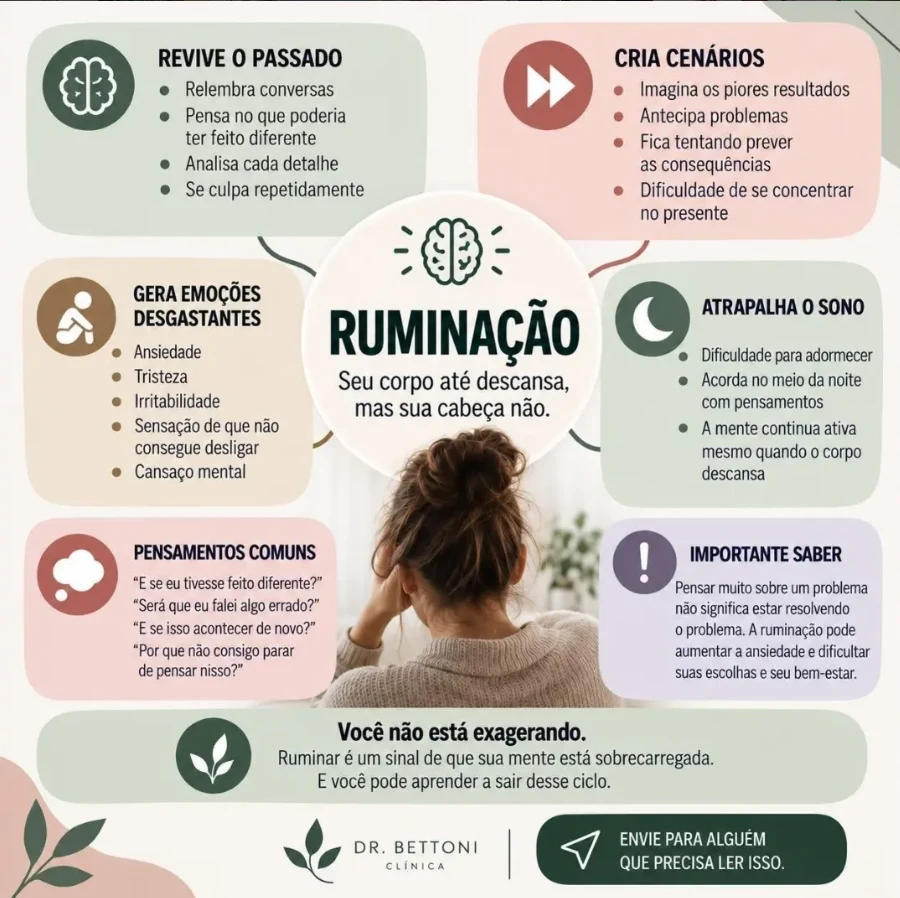

PARA CONTINUAR A CONVERSACuidado que também
Cuidado que também
vira conhecimento.
Reflexões para olhar com mais atenção para você.
Acompanhe a clínica e os projetos do Dr. Bettoni.
SAÚDE MENTAL
Cuidar de si também é um ato de amor.
Respeitar seus limites faz parte do cuidado.
Ver mais no InstagramSAÚDE MENTALPensamento não é fato.
Um convite para observar as suposições do dia a dia.
Ver mais no Instagram
SAÚDE MENTALQuando a mente não desacelera.
Reconhecer os pensamentos que se repetem.
Ver mais no Instagram
OS PROJETOS DO DR. EDERSON BETTONIPara além
Para além
do consultório.
No seu perfil pessoal, o Dr. Bettoni compartilha conteúdos sobre saúde mental e apresenta seus materiais educativos e projetos.
MENTORIA
Mãe no Limite
Um projeto dedicado a ensinar mães a cuidar da própria saúde mental. Conheça a proposta e os materiais disponíveis nos canais do doutor.
Os produtos educativos são acessados em canais externos. Para consultas e exames da clínica, fale com a recepção.